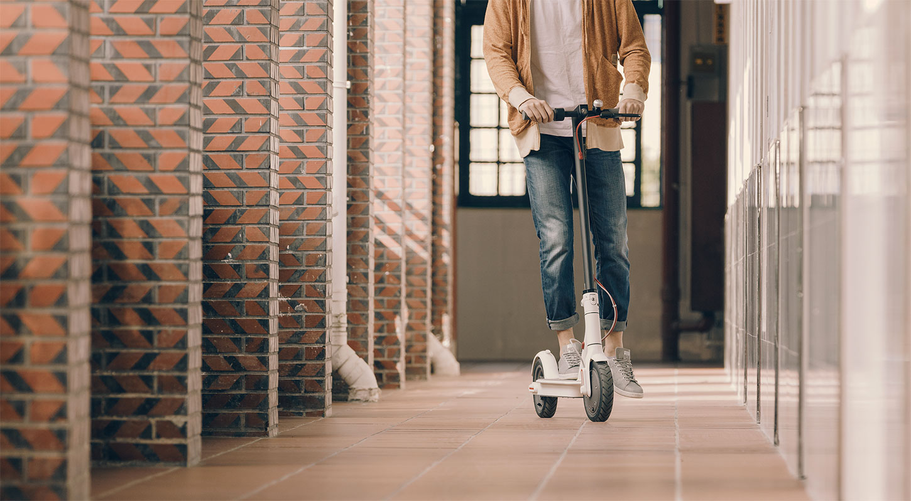
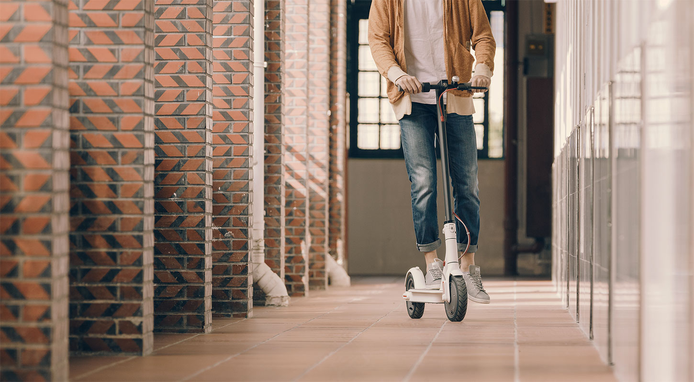

Стильный электросамокат с мощным аккумулятором
Улучшенная производительность для дальних путешествий.
Работает так же просто,
как и выглядит.
Улучшенная производительность для дальних путешествий.
Работает так же просто,
как и выглядит.
Три режима езды позволяют почуствовать себя комфортно в любой ситуации. Режим «S» увеличитвает скорость, если опаздываете на работу. Во время прогулки по парку активируйте режим «D». Включите режим «Пешеход», когда двигаетесь по оживлённой улице.
Во время торможения и движения по инерции система преобразовывает кинетическую энергию в электрическую, позволяя увеличить общий запас хода самоката.
Самокат оснащен аккумулятором емкостью 12 800 мАч. Это позволяет преодолевать расстояния до 45 км без подзарядки.
 

Рама, компоненты и аксессуары скутера выдержаны в едином стиле, где удобство пользователя выходит на первое место. Одного прикосновения достаточно, чтобы запустить самокат.
Удобно расположенные элементы управления. Отображение 8 типов данных в реальном времени: скорость, режим, заряд аккумулятора, состояние блокировки и другая информация.